Measure your antenna from any browser.Miss deine Antenne aus jedem Browser.
A NanoVNA-H, a small ESP32 board and your WiFi: SWR, impedance, Smith chart, ham bands, cables and fault finding on your phone, at the antenna. Free and open source. Ein NanoVNA-H, ein kleines ESP32-Board und dein WLAN: SWR, Impedanz, Smith-Diagramm, Amateurfunkbänder, Kabel und Fehlersuche auf dem Handy, direkt an der Antenne. Kostenlos und Open Source.
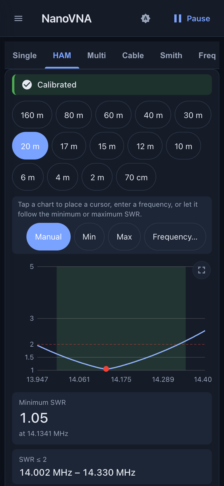
The NanoVNA, taken to a whole new level.Das NanoVNA auf ein ganz neues Level gehoben.
The small display and the few buttons of a NanoVNA are made for a quick look. With a phone in your hand the same device becomes a proper antenna workbench: bigger, faster to operate, free of cables to the computer, and with functions the device itself does not offer. Das kleine Display und die wenigen Tasten eines NanoVNA sind für einen schnellen Blick gemacht. Mit dem Handy in der Hand wird dasselbe Gerät zu einer richtigen Antennen-Werkbank: größer, schneller zu bedienen, ohne Kabel zum Rechner und mit Funktionen, die das Gerät selbst nicht bietet.
Version 1.2: sharper, faster, easier to read.Version 1.2: übersichtlicher, schneller, besser lesbar.
- Full-screen charts. One button blows any chart up to the whole screen.Diagramme im Vollbild. Ein Knopf zieht jedes Diagramm auf den ganzen Bildschirm.
- Markers that follow the extremum. Min and Max track the lowest or highest value on every sweep and say so in the label; with several curves the label names the first trace, which decides.Marker, die dem Extremum folgen. Min und Max verfolgen bei jedem Sweep den tiefsten oder höchsten Wert und stehen so im Label; bei mehreren Kurven nennt das Label die erste Kurve, die entscheidet.
- Marker readout. Delta, search, sweep range from markers, Q, series and parallel circuit.Marker-Anzeige. Delta, Suche, Sweep-Bereich aus Markern, Q, Reihen- und Parallelersatzschaltung.
- More trace formats. Rp, Xp, Q, group delay, Y Smith and polar.Mehr Kurvenformate. Rp, Xp, Q, Gruppenlaufzeit, Y-Smith und Polar.
- Guided calibration. Step by step, with a check that warns when the wrong standard is attached.Geführte Kalibrierung. Schritt für Schritt, mit einer Prüfung, die warnt, wenn der falsche Abschluss angesteckt ist.
- Faster sweeps. Multi, Cable, TDR and the calibration read the data in binary.Schnellere Sweeps. Multi, Kabel, TDR und die Kalibrierung lesen die Daten binär.
- Zoom and a modern look. Two-finger zoom, mouse wheel and drag on the desktop, a new colour scheme in dark and light.Zoom und modernes Aussehen. Zoomen mit zwei Fingern, am Desktop mit Mausrad und Ziehen, ein neues Farbschema in Dunkel und Hell.
- More tools. Port extension, sweep quality dialog (bandwidth, smoothing, power) and a note when the NanoVNA firmware is out of date.Mehr Werkzeuge. Port-Extension, Sweep-Qualität (Bandbreite, Glättung, Leistung) und ein Hinweis, wenn die NanoVNA-Firmware veraltet ist.
- Robust. The app recovers when the connection to the NanoVNA drops, and the Feather's display lists its buttons in the order they sit on the board.Robust. Die App erholt sich, wenn die Verbindung zum NanoVNA abbricht, und das Display des Feathers nennt die Tasten in der Reihenfolge, in der sie auf der Platine sitzen.
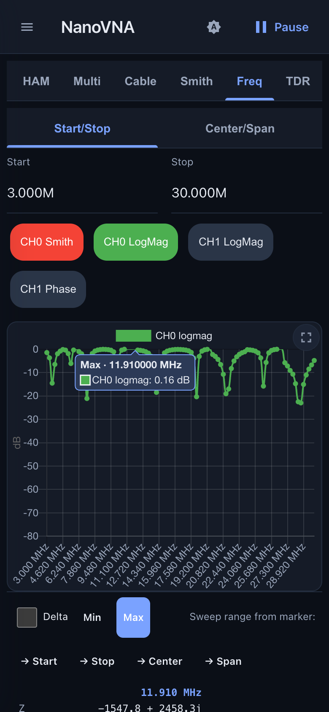
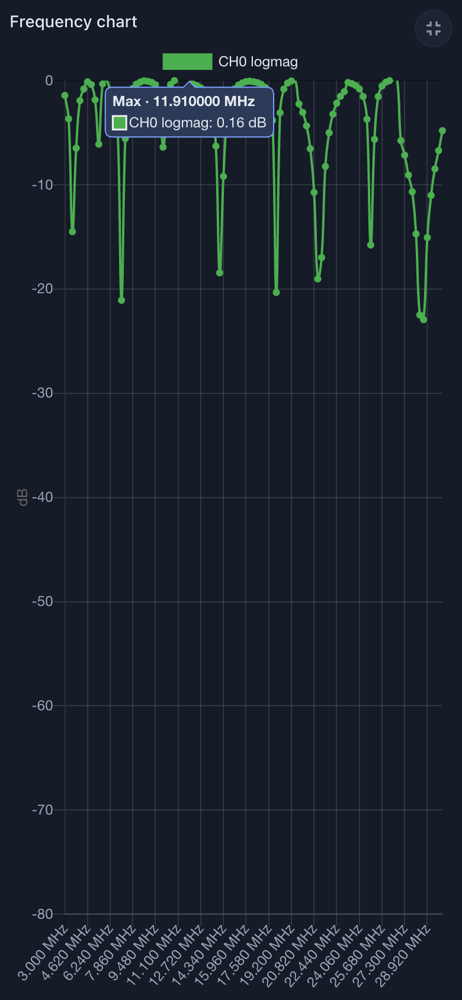
Seven views, one for every job.Sieben Ansichten, für jede Aufgabe eine.
Tap through from a single frequency to a whole band, several bands at once or a cable. Everything is calculated in the browser, on your phone. Von einer einzelnen Frequenz über ein ganzes Band und mehrere Bänder gleichzeitig bis zum Kabel. Gerechnet wird im Browser, auf deinem Handy.
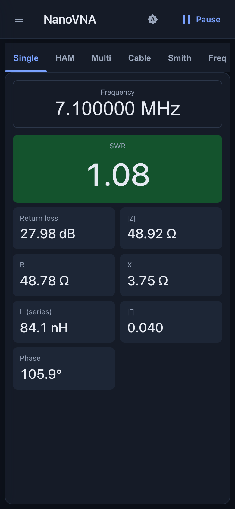
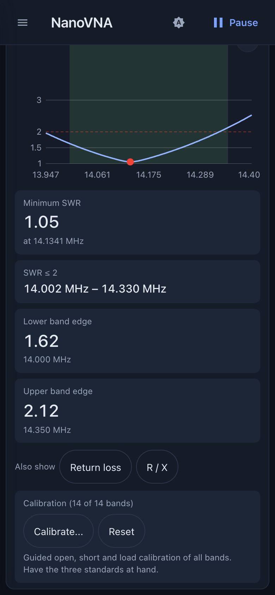
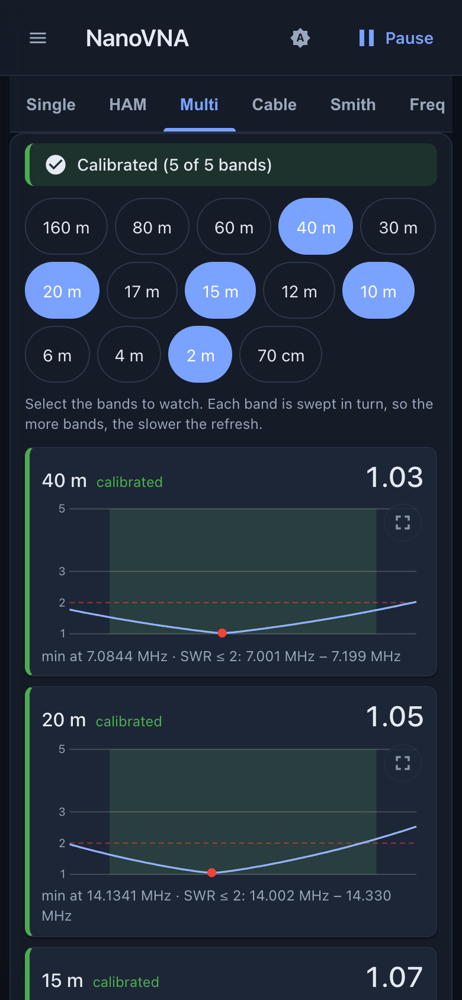
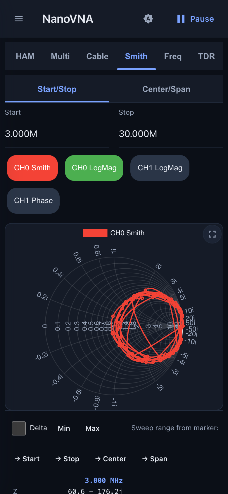
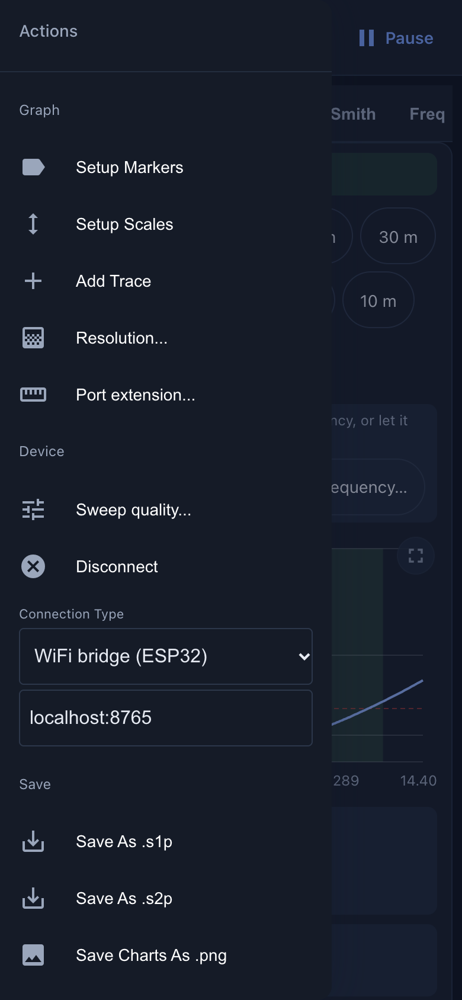
Calibrate once. Every band, every browser.Einmal kalibrieren. Jedes Band, jeder Browser.
- Open, short and load, each connected once. The app corrects all 14 ham bands from 160 m to 70 cm.Open, Short und Load, je einmal angesteckt. Die App korrigiert alle 14 Amateurfunkbänder von 160 m bis 70 cm.
- The calibration lives in the Feather, so a second phone or computer uses it right away.Die Kalibrierung liegt im Feather, ein zweites Handy oder ein Computer nutzt sie sofort.
- Every band card says whether it is calibrated, so you never read uncorrected values by mistake.Jede Bandkarte zeigt, ob sie kalibriert ist, so liest du nie unkorrigierte Werte.
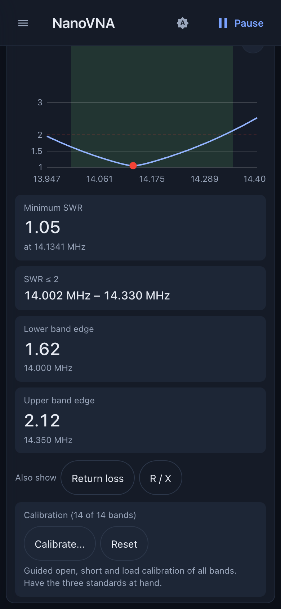
Know your coax. Find the fault.Kenne dein Koax. Finde den Fehler.
Length, velocity factor, loss and characteristic impedance of a cable, stub lengths for matching, and a time-domain view that shows where along the cable the signal is reflected. Länge, Verkürzungsfaktor, Dämpfung und Wellenwiderstand eines Kabels, Stub-Längen zum Anpassen und eine Zeitbereichsansicht, die zeigt, wo entlang des Kabels das Signal reflektiert wird.
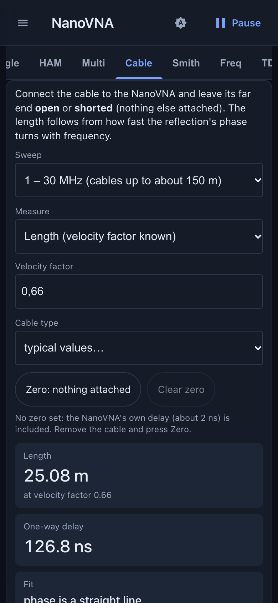
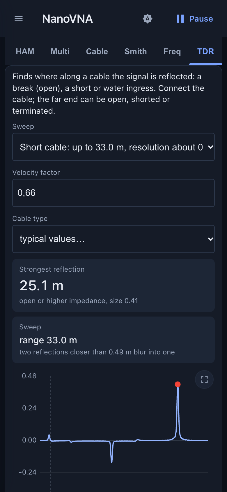
Made for the phone. Fine on a desktop.Für das Handy gemacht. Am Desktop ebenso gut.
Dark for the evening, light for the garden in the sun. The layout follows the screen size. Dunkel für den Abend, hell für den Garten in der Sonne. Das Layout passt sich der Bildschirmgröße an.
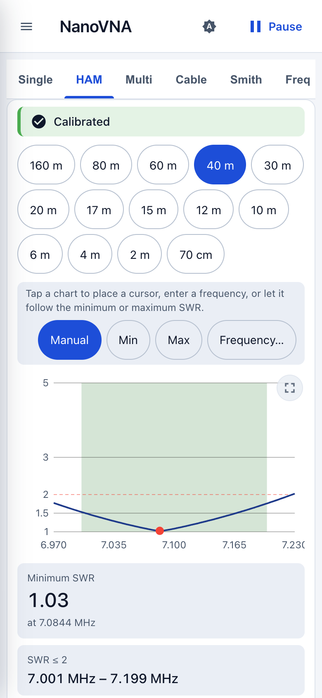
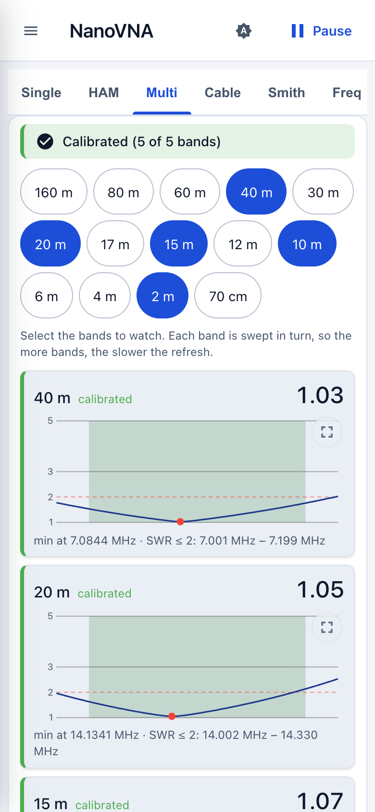
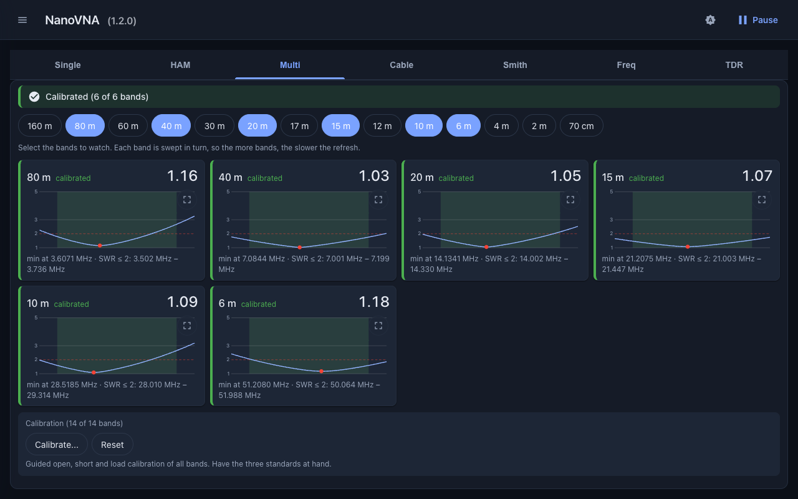
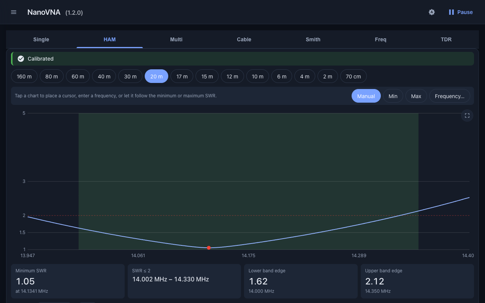
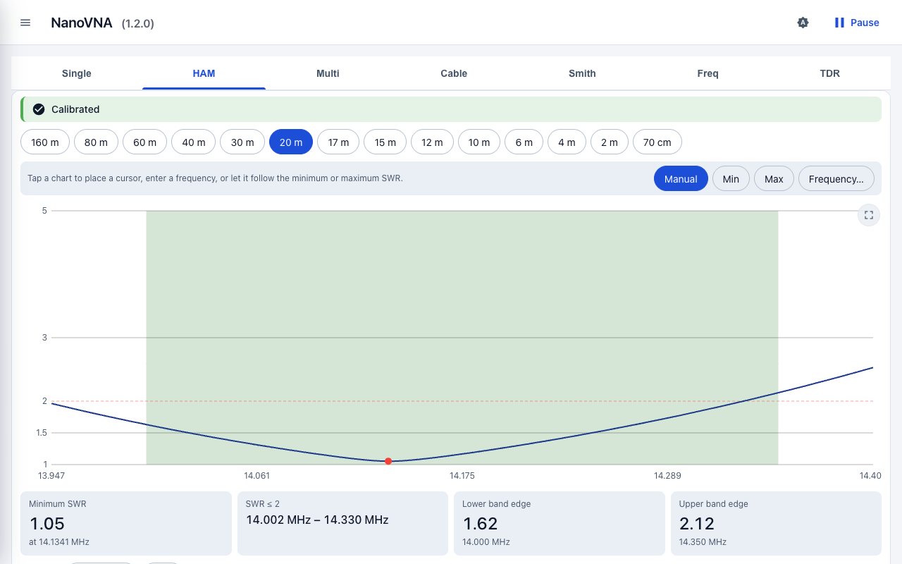
The screenshots show simulated values, not real measurements. Die Screenshots zeigen simulierte Werte, keine echten Messungen.
A NanoVNA, a Feather, your WiFi.Ein NanoVNA, ein Feather, dein WLAN.
An Adafruit ESP32-S3 Reverse TFT Feather is the USB host for the NanoVNA-H. It joins your WiFi and serves the app, nothing to install. The firmware only passes the data through; all evaluation happens in the browser. Ein Adafruit ESP32-S3 Reverse TFT Feather ist der USB-Host für den NanoVNA-H. Er verbindet sich mit deinem WLAN und liefert die App aus, es muss nichts installiert werden. Die Firmware reicht die Daten nur durch, ausgewertet wird im Browser.
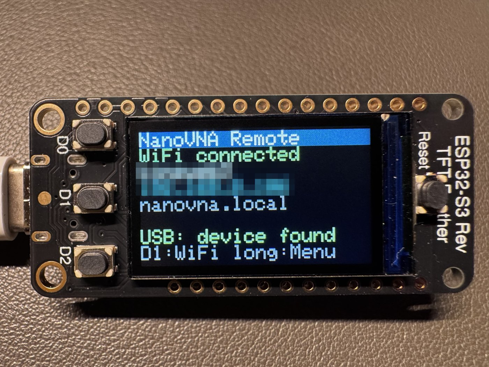
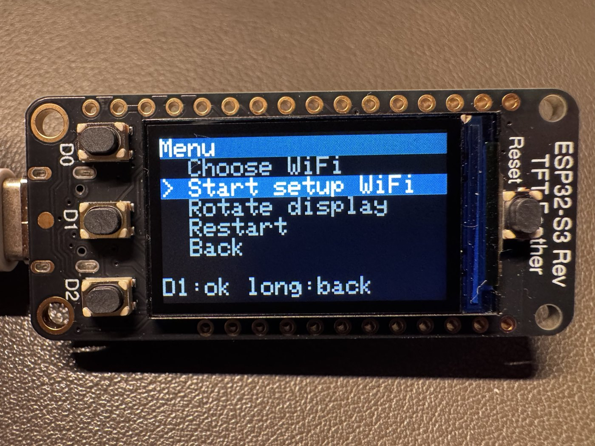
- The Feather's display shows the WiFi, the address and the USB state; three buttons choose the network and rotate the picture.Das Display des Feathers zeigt WLAN, Adresse und USB-Zustand; drei Tasten wählen das Netz und drehen das Bild.
- Up to eight saved networks, with a setup WiFi as fallback. Updates go over WiFi.Bis zu acht gespeicherte Netze, mit einem Setup-WLAN als Rückfall. Updates laufen per WLAN.
Free software. Read it, build it, improve it.Freie Software. Lies sie, baue sie, verbessere sie.
The firmware is GPL-3.0-or-later, the web app GPL-2.0. The web app is based on cho45's NanoVNA-Web-Client. Ideas and bug reports are welcome on GitHub. Die Firmware steht unter GPL-3.0-oder-später, die Web-App unter GPL-2.0. Die Web-App basiert auf cho45s NanoVNA-Web-Client. Ideen und Fehlermeldungen sind auf GitHub willkommen.